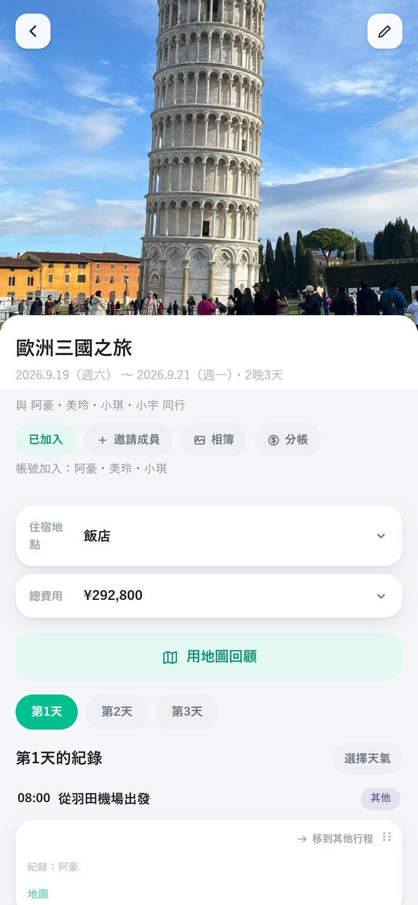
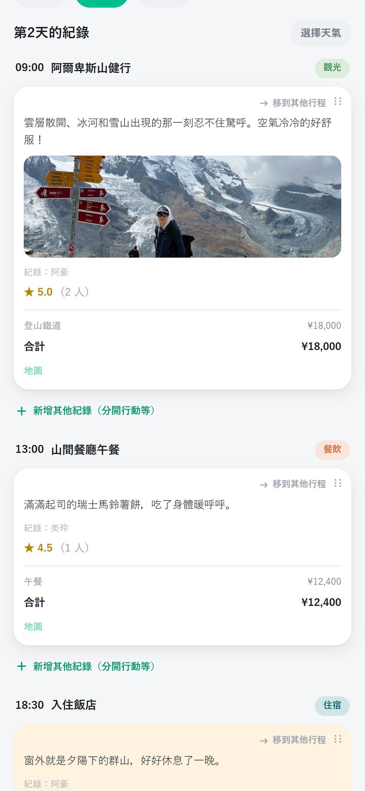
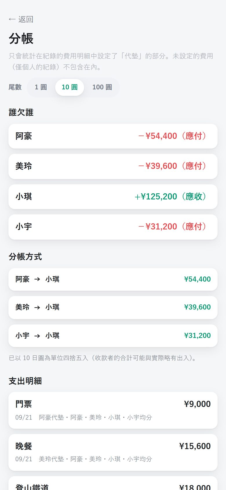
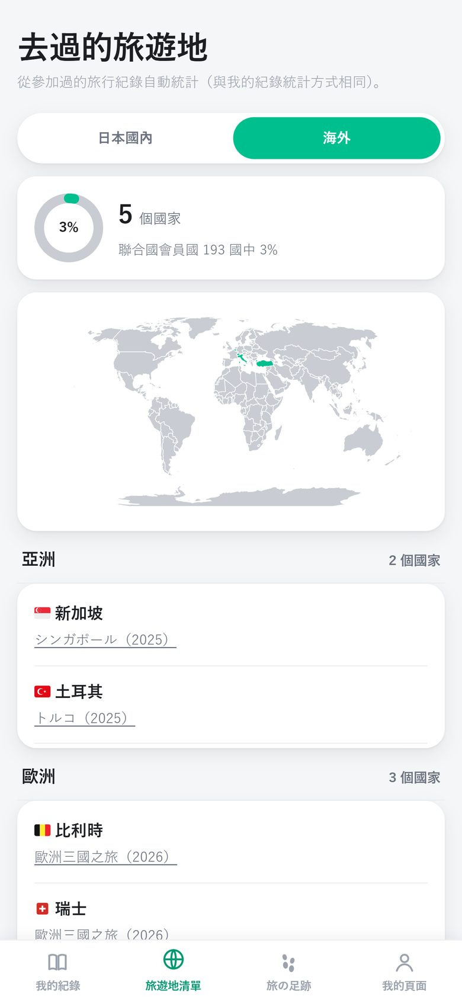

把那趟旅行，
和一起去的人
一起寫下來。
什麼時候、去了哪裡、吃了什麼、花了多少錢。照片、影片、花費，都能依時間記下旅程的每一天。只要傳個連結，同行的夥伴就能一起看、一起補充。

查看、補充紀錄都不用登入。貼到家人的 LINE 群組，馬上就能開始。
旅程路線會在地圖上跑起來，搭配當時的照片，重走一遍這趟旅行。
記下誰先墊了錢，回家後自動算出最省事的結算方式。
旅途中的「咦，那間在哪？」
通通幫你留下來
從旅途中的隨手筆記，到回家後的回顧與結算。
依時間，
留下一天的流程
像「11:00 首里城公園」「12:30 首里蕎麥麵」這樣，每個行程都能附上照片、心得、花費和★評分。
- 照片與影片直接附上
- 花費逐筆輸入，自動加總
- 分開行動的時段，也能分開記錄、並排顯示
- 住宿與總花費整理在旅行頁最上方

旅行的足跡，
在地圖上奔跑起來
把記錄過的地點串起來，各種交通工具的圖示會沿著路線前進。電車沿著鐵軌，飛機飛越天空。抵達每個地點時，還會跳出當時拍的照片。
- 跨時區的海外旅行，也維持當地時間
- 可輸出成直式影片，直接分享到社群
用截圖、語音、筆記，
一次建立行程
機票和飯店訂房的截圖、旅行後說出口的內容、備忘錄裡的條列筆記。AI 會依日期、時間、地點拆成一個個行程，排在確認畫面上。修改一下再加入就好。
- 支援機票、飯店、車票、轉乘路線的截圖
- 沒說到、沒寫到的內容，不會自行臆測補上
- 拍下收據，就變成花費明細
「誰要付多少？」
旅行結束後不再傷腦筋
每筆花費只要選好「誰付的」和「誰要分攤」。就會算出轉帳次數最少的結算方式。
- 零頭可依 1 日圓、10 日圓、100 日圓為單位進位
- 外幣付款，也能依當天匯率換算成日圓
- 只統計代墊的款項（個人的紀錄不會混進來）

去過的都道府縣與國家，
在地圖上一一點亮
根據你參加過的旅行紀錄，自動統計去過的都道府縣和國家。打過★的美食、住宿、體驗，也能跨旅行回頭翻看，變成「美食紀錄」「住宿紀錄」。
- 只是轉機路過的國家，不會算進去
- 算錯的地方，隨時可以「移除」修正
- 評分只有自己看得到


還有更多旅行用得上的功能
海外行程會依地圖上的地點，以當地時間排列，時差的交界處還有分隔線。
像「下午只有我去美術館」這種一個人走不同的路，也能切換成那個人的路線來看。
同一間店，每位同行的人都能各自打★。旅行整體則顯示平均分數。
像「第 1～2 晚住這間，第 3 晚同上」，住過的飯店能依每一晚整理。
旅途中拍的照片和影片，可依日期排列在相簿裡一次瀏覽。
只有打評分、使用「我的足跡」時才需要登入。單純查看、補充紀錄不用帳號。
基本免費，可以一直用
旅行紀錄、分享、在地圖上回顧、結算，使用次數不限，完全免費。只有使用 AI 的匯入功能，每個月有次數限制。
常見問題
一起去的人也需要安裝 App 嗎？
不用。只要傳旅行的連結給他們，沒有 App 也能直接用瀏覽器查看、補充紀錄，也不需要登入。
照片和紀錄會被陌生人看到嗎？
旅行紀錄只有知道該旅行連結的人才看得到。知道連結的人也能補充內容，所以請只傳給一起去的夥伴。
Android 或電腦也能用嗎？
可以。用網頁版（tabinoashiato.pages.dev）就能使用相同的功能。iPhone 也可以使用 App Store 的 App。
傳給 AI 的資料會怎麼處理？
語音、筆記、截圖的匯入，以及收據辨識，都會先跳出確認視窗，同意後才會傳送。傳送的內容不會被用於 AI 的訓練。詳情請見隱私權政策（日文版為準）。